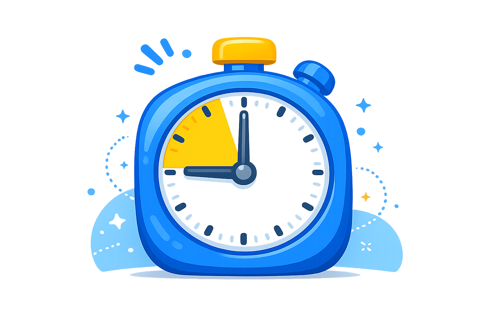

Classroom Timer
A simple visual timer for activities, centers, transitions, and classroom routines.
05:00
Quick Presets
Tip: Use this timer for centers, cleanup, reading time, or classroom transitions.

A simple visual timer for activities, centers, transitions, and classroom routines.
Tip: Use this timer for centers, cleanup, reading time, or classroom transitions.